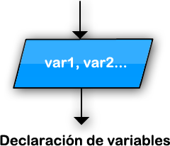

|
La instrucción Leer permite ingresar información desde el ambiente. Leer <variablel> , <variable2> , ... , <variableN> ; Esta instrucción lee N valores desde el ambiente (en este caso el teclado) y los asigna a las N variables mencionadas. Pueden incluirse una o más variables, por lo tanto el comando leerá uno o más valores. |
|  |
|
La instrucción Salida permite mostrar valores al ambiente. Salida <exprl> , <expr2> , ... , <exprN> ; Esta instrucción imprime al ambiente (en este caso en la pantalla) los valores obtenidos de evaluar N expresiones. Dado que puede incluir una o más expresiones, mostrará uno o más valores. |